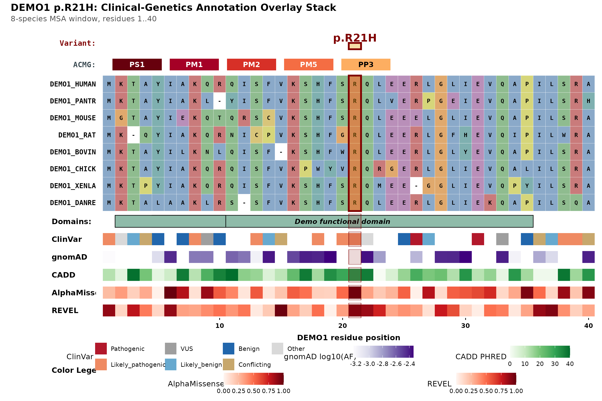

The shipped tracks cover the databases most variant-interpretation
work touches, but they will never cover a lab-internal assay, a paper’s
supplementary table, or a predictor released last month.
msaVariant has two entry points for your own data:
-
geom_track()— one ad-hoc strip on an alignment, no bundle needed -
import_local_bundle()— a full gene bundle, so a gene you assembled yourself works withplot_variant_overlay()andcompute_acmg_codes()like any other
library(msaVariant)
Sys.setenv(MSAVARIANT_CACHE = tempfile("msaVariant_cache_"))
demo_fasta <- system.file("extdata", "demo_aligned.fasta",
package = "msaVariant")
geom_track() — an arbitrary per-residue strip
geom_track() returns ordinary ggplot2 layers, so it
composes onto a ggmsa() alignment plot. It needs a data
frame with a pos column (residue position in the reference)
plus a value column you name.
Continuous tracks
# Any per-residue score: a deep-mutational-scan readout, a conservation
# metric, a predictor of your own.
my_scores <- data.frame(
pos = 1:40,
score = round(abs(sin(seq(0, 6, length.out = 40))), 3)
)
head(my_scores)
#> pos score
#> 1 1 0.000
#> 2 2 0.153
#> 3 3 0.303
#> 4 4 0.445
#> 5 5 0.577
#> 6 6 0.696
library(ggmsa)
ggmsa(demo_fasta, char_width = 0.6, seq_name = TRUE) +
geom_track(my_scores, msa = demo_fasta,
value = "score",
name = "DMS fitness",
type = "continuous")The chunk above is not evaluated here because ggmsa is a
suggested dependency, not a hard one. Install it with
BiocManager::install("ggmsa") to run it.
Useful arguments:
-
palette— colours ramped low-to-high; defaults to a blue–yellow–red diverging ramp -
value_range— pinc(min, max)instead of fitting to the observed data, so several figures stay comparable -
y_offset,track_height— vertical placement in MSA-row units, for stacking more than one track -
ref_name— reference sequence name, matching the parentggmsa()call
Discrete tracks
Set type = "discrete" and give a named palette over the
levels:
my_calls <- data.frame(
pos = c(6, 21, 30),
sig = c("Benign", "Pathogenic", "VUS")
)
ggmsa(demo_fasta, char_width = 0.6, seq_name = TRUE) +
geom_track(my_calls, msa = demo_fasta,
value = "sig",
type = "discrete",
name = "In-house panel",
palette = c(Benign = "#2166AC",
VUS = "#9E9E9E",
Pathogenic = "#B2182B"))Without a palette, discrete levels get an automatic hue
palette; values not found in a supplied palette fall back to grey.
What geom_track() does with pos
Positions are mapped from reference residue numbering to alignment
columns with map_variant_to_msa(), exactly like the
built-in tracks:
map_variant_to_msa(c(1, 21, 40), demo_fasta, ref_name = "DEMO1_HUMAN")
#> [1] 1 21 40Positions that land on a gap in the reference map to NA
and are dropped. If nothing maps, you get a warning and
NULL rather than a silently empty strip — usually a sign
that your table is in transcript or genomic coordinates rather than
protein residue numbering.
import_local_bundle() — your own gene bundle
geom_track() adds a strip. A bundle gets you the whole
machine: the multi-panel figure, the legend dashboard and the ACMG
evidence strip, for a gene that has no Zenodo deposit.
path <- system.file("extdata", "DEMO1.rds", package = "msaVariant")
import_local_bundle(path, gene = "DEMO1")
#> Cache directory does not exist yet (no annotations have been downloaded).
#> Imported DEMO1 bundle -> /tmp/Rtmp7a2TsS/msaVariant_cache_1d176ce4aea7/0.1.0/DEMO1.rdsThe file is validated, then copied into the cache
(cache_location()), after which
fetch_gene_data() finds it like anything else — no network
access:
demo <- fetch_gene_data("DEMO1")
compute_acmg_codes(demo, 21, "R21H")
#> [1] "PS1" "PM1" "PM2" "PM5" "PP3"
plot_variant_overlay(
gene = "DEMO1",
aligned_fasta = demo_fasta,
variant_pos = 21,
variant_label = "p.R21H"
)
gene is optional — omitted, the symbol is read from
bundle$meta$gene and used as the cache filename. Also
available: overwrite = FALSE to refuse replacing an
existing bundle, and verify_checksum to compare against a
local MANIFEST.tsv when one is present (a mismatch warns
but still imports).
The bundle schema
A bundle is a named list of seven data frames. The fastest way to see the expected shape is to ask for an empty one:
skeleton <- empty_gene_data(gene = "MYGENE", uniprot_id = "P00000",
protein_length = 393L)
str(skeleton, max.level = 1)
#> List of 7
#> $ meta :'data.frame': 1 obs. of 7 variables:
#> $ domains :'data.frame': 0 obs. of 5 variables:
#> $ clinvar :'data.frame': 0 obs. of 7 variables:
#> $ gnomad :'data.frame': 0 obs. of 9 variables:
#> $ alphamissense:'data.frame': 0 obs. of 6 variables:
#> $ revel :'data.frame': 0 obs. of 5 variables:
#> $ cadd :'data.frame': 0 obs. of 7 variables:
lapply(skeleton, names)
#> $meta
#> [1] "gene" "uniprot_id" "protein_length"
#> [4] "ensembl_gene_id" "ensembl_transcript_id" "build_date"
#> [7] "source_versions"
#>
#> $domains
#> [1] "start" "end" "name" "accession" "source"
#>
#> $clinvar
#> [1] "pos" "aa_ref" "aa_alt" "aa_change"
#> [5] "significance" "review_status" "clinvar_id"
#>
#> $gnomad
#> [1] "pos" "aa_ref" "aa_alt" "aa_change" "consequence"
#> [6] "af_joint" "ac_joint" "an_joint" "filter"
#>
#> $alphamissense
#> [1] "pos" "aa_ref" "aa_alt" "aa_change" "am_score" "am_class"
#>
#> $revel
#> [1] "pos" "aa_ref" "aa_alt" "aa_change" "revel_score"
#>
#> $cadd
#> [1] "pos" "aa_ref" "aa_alt" "aa_change" "consequence"
#> [6] "cadd_raw" "cadd_phred"Build your tables into that skeleton and check as you go:
skeleton$domains <- data.frame(
start = 5L,
end = 35L,
name = "My domain",
accession = "PF00000",
source = "Pfam"
)
v <- validate_gene_data(skeleton, strict = FALSE)
v$valid
#> [1] FALSE
broken <- skeleton
broken$revel <- data.frame(pos = 1:3) # missing revel_score
validate_gene_data(broken, strict = FALSE)$issues
#> [1] "meta$ensembl_gene_id: NA in required column"
#> [2] "meta$ensembl_transcript_id: NA in required column"
#> [3] "domains$source: expected factor, got character"
#> [4] "revel: missing required columns: aa_ref, aa_alt, aa_change, revel_score"strict = TRUE errors on the first problem instead of
returning an issue list — the right mode inside a build script.
import_local_bundle() runs
validate_gene_data(strict = FALSE) itself and refuses a
non-conforming file, so a bad bundle fails at import rather than halfway
through drawing a figure.
Two things to get right, because validation cannot catch them:
Numbering. pos is a residue position in
the canonical reference protein — the same protein whose sequence is in
your aligned FASTA. Not transcript coordinates, not genomic.
aa_change format. "R21H" —
reference residue, position, alternate residue, no p.
prefix. This string is matched exactly by the PS1, PM2 and PP3
rules, so a format drift between your ClinVar table and your CADD table
means codes quietly fail to fire.
Once the tables validate, save and import:
saveRDS(skeleton, "MYGENE.rds")
import_local_bundle("MYGENE.rds")Partial bundles
Every table may be empty. A bundle with only meta and
domains is valid, and the figure re-flows to whatever is
populated — an absent table behaves exactly like
show_<track> = FALSE (see
vignette("toggling-layers")).
The one asymmetry worth knowing: an empty gnomAD table means “never observed in the population”, so PM2 fires for every variant. If you have no gnomAD data — as opposed to genuine absence from gnomAD — that is a false PM2, and you should read the strip accordingly.
Cache management
cache_location()
#> [1] "/tmp/Rtmp7a2TsS/msaVariant_cache_1d176ce4aea7"
cache_summary()
#> gene size_kb cached_on
#> 1 DEMO1 3.1 2026-07-23
clear_cache() # remove everything
clear_cache("gnomad") # remove one slicePoint MSAVARIANT_CACHE at a project directory to keep a
study’s bundles beside the analysis, which is also how the examples in
these articles avoid touching your real cache:
Sys.setenv(MSAVARIANT_CACHE = "~/projects/my_study/msaVariant_cache")See also
-
?geom_track,?import_local_bundle,?validate_gene_data -
vignette("annotation-tracks")— what each built-in table holds -
vignette("acmg-evidence-codes")— the rules your tables will feed